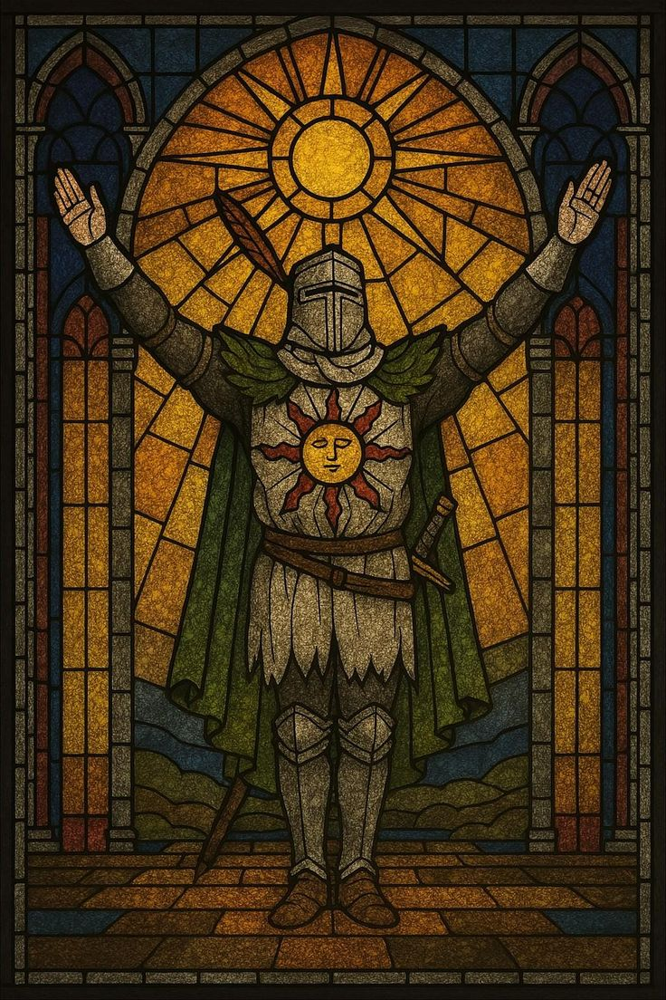
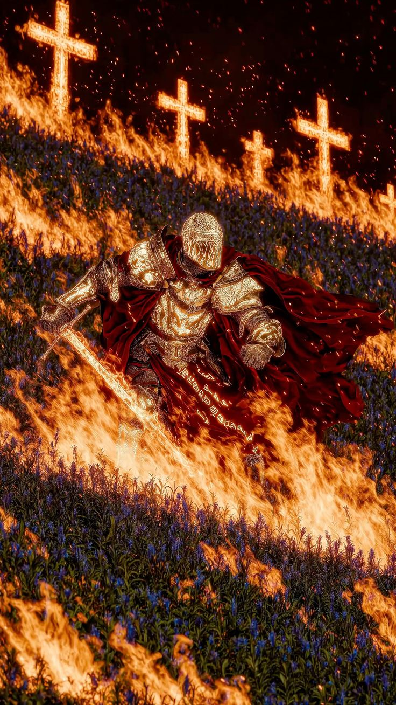
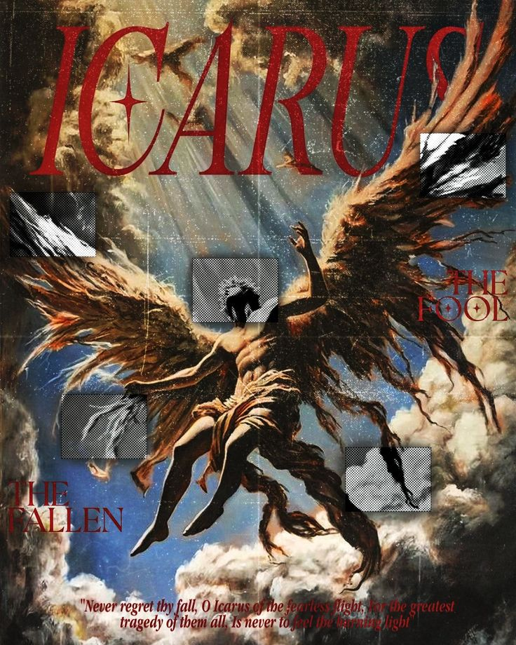
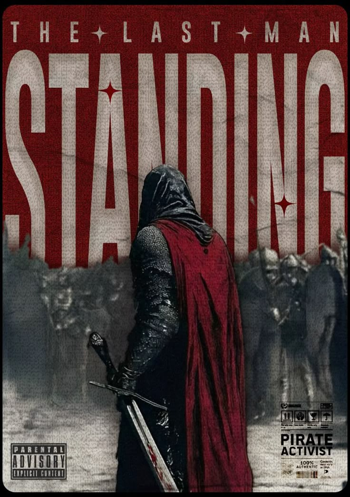
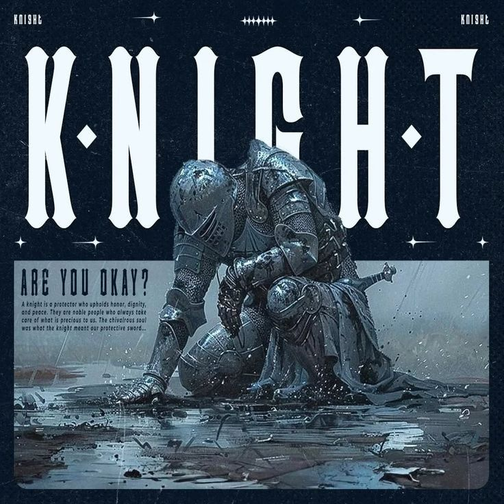
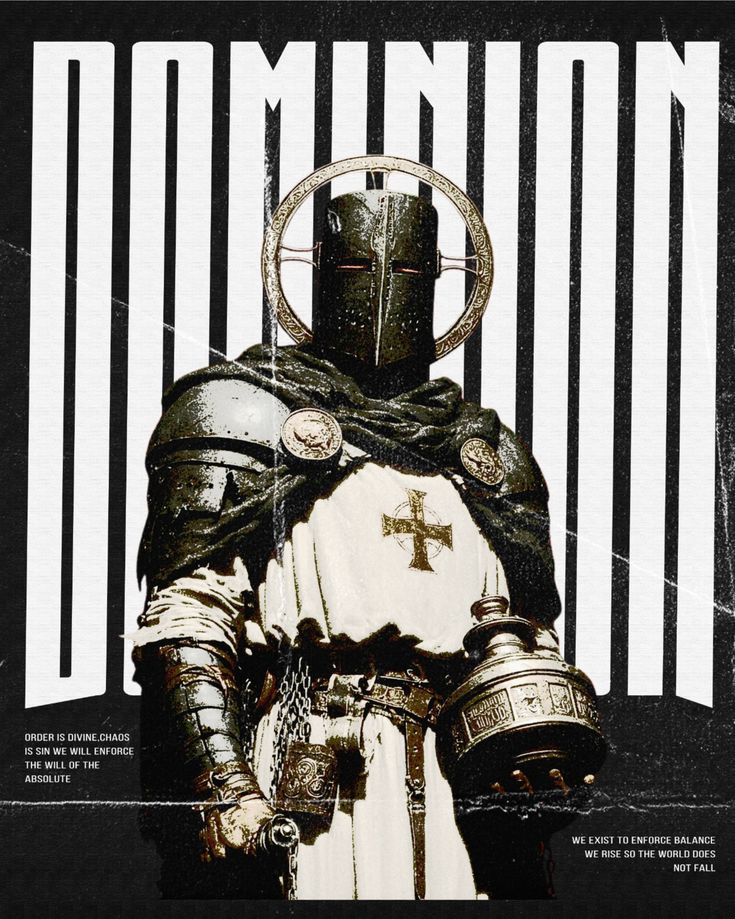
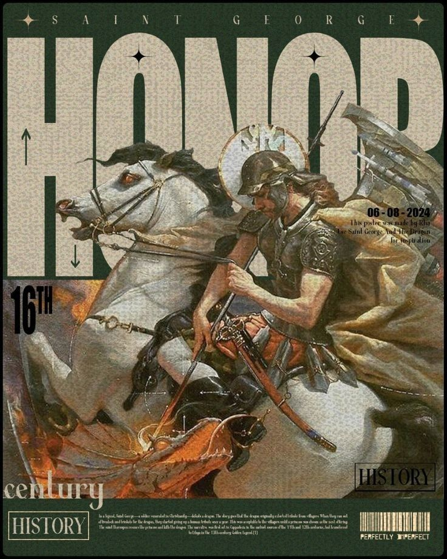

The Road Of No Banners
A lone oath can outlive a kingdom when it is carried without heralds, songs, or witnesses.
Every keep has a library of wounds and victories. These are the pages the court reads by candle, after the gates are barred.

A lone oath can outlive a kingdom when it is carried without heralds, songs, or witnesses.

When the beacon turned red, the gatehouse learned the old lesson: stone remembers fire.

No minstrel sang for the rearguard, but every child inside the walls woke alive.

Some guards defend doors. Others defend the silence before a war council speaks.
Not trophies. Proof. Each relic is a sealed witness from a border, a chapel, a battlefield, or a name that nearly vanished.




Forget modern features. A citadel survives by orders: sworn duties, hard rules, and crafts that keep the realm breathing.
For knights who hold the line when the banners fall and the only command left is duty.
Swear The OathBeacon keepers read smoke, weather, and fear before the enemy reaches the valley road.
Light The BeaconEvery pardon, levy, treaty, and secret sentence is weighed in ink before steel moves.
Seal The WritA throne is only as steady as the hands around it. These are the names trusted with the keys, maps, and last words.
Speaks softly, signs rarely, and turns impossible sieges into patient victories.
Moves armies by bridges, grain, and timing before a sword leaves its scabbard.
Turns rival houses into temporary allies when war would cost too much blood.
Commands the final watch and asks for no song when the torches burn low.
The realm runs on quiet labor: decrees copied clean, steel kept sharp, roads mapped, and promises collected before sunset.